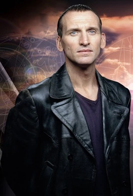
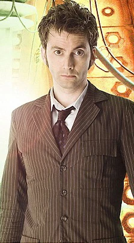
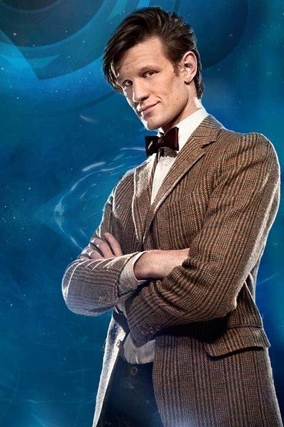
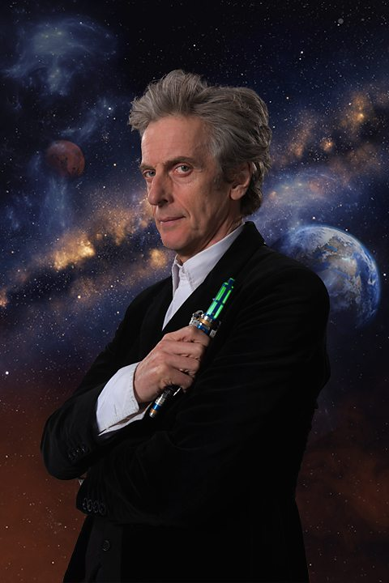
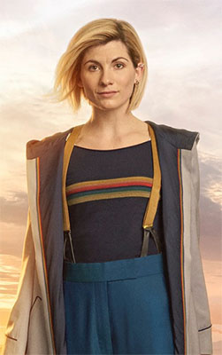
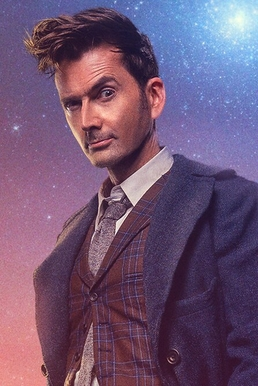
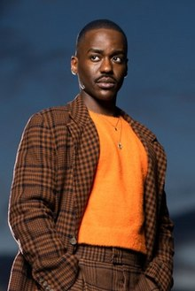

The Ninth Doctor
The ninth doctor was played by Christopher Eccleston for one season in 2005. Ecceston had the shortest run as the doctor since the show was rebooted in 2005 (save for the fourteenth doctor, but he was a sepcial case). Eccleston played the first doctor appearing in what is known as "New Who." Nine's only companion was Rose Tyler.

The Tenth Doctor
The tenth doctor was played by David Tennant. Tennant played the tenth doctor for three seasons from 2005-2010. Ten had five main companions: Rose Tyler and Micky Smith, Donna Nobel, Martha Jones, and Captain Jack Harkness.

The Eleventh Doctor
The eleventh doctor was played by Matt Smith. Smith played the doctor for three seasons from 2010-2014. Eleven had three comapnions: Amy Pond and Rory Williams folowed by Clara Oswald.

The Twelfth Doctor
The twelfth doctor was played by Peter Capaldi. Capaldi played the doctor for three seasons from 2014-2017. Twelve had three companions: Clara Oswald followed by Bill Potts and Nardole.

The Thirteenth Doctor
The Thirteenth Doctor was played by Jodi Whittaker. Whittaker was the first female doctor. She played the doctor for three seasons from 2018-2022. Thirteen had five main companions: Graham O'Brian, Ryan Sinclair, Yazmin Kahn, Captain Jack Harkness, and Dan Lewis.

The Fourteenth Doctor
The Fourteenth doctor was played by David Tennant. Tennant returned to play the fourteenth incarnation of the doctor for only three specials. During his short reappearance, he was accompanied by Donna Nobel once again.

The Fifteenth Doctor
The fifteenth doctor is being played by Ncuti Gatwa. As of writing, Gatwa has appeared in four specials, but will go on to play the doctor for at least two full seasons. His current companion is Ruby Sunday.
